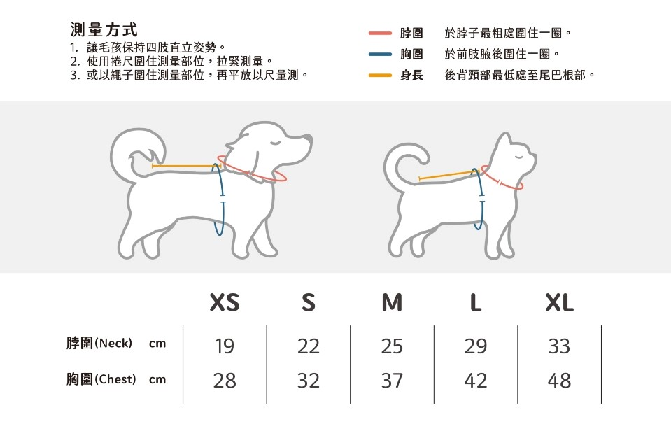

如何加入樂寵會員？
首次預約服務或購買商品，請先完成帳號的註冊；若需預約毛孩健檢，請至會員專區的「我的寵物」輸入相關基本資料及資訊。
虛擬試衣間的毛孩服飾，尺寸該如何挑選？
請以下圖做為丈量尺寸之參考，並幫您家的毛孩確實丈量尺寸，以確保購買的服飾合身。 
請問樂寵的運費是怎麼計算的呢？
台灣本島含外島範圍，商城消費滿1,000元以上獲得免運；未滿1,000元，則收取100元宅配費用。
可以指定商品的宅配日期與時段嗎？
商品備貨皆須3~5天，於下單時在「其他備註」上填入指定到貨日(日期須大於5天)，時段則可選擇上午8~12時之間，或下午13~18時，請注意18時過後，恕不提供配送的服務。
如何查詢商品的配送狀況？
登入樂寵會員後，可至會員專區的「訂單管理」，查詢出貨狀態。
一般不指定宅配時間的話，商品的到貨日期大約是？
商品顯示出貨狀態後，約莫2~3個工作天送達，如遇天災等不可抗力因素，將可能延遲配送進度，屆時會傳送電子郵件到各會員的信箱做通知。
若想修改訂單的商品規格是可以的嗎？
商品呈現備貨中的狀態時，代表我們還沒確認訂單資訊是可以的唷！但如果已進入撿貨狀態，則無法修改訂單。
關於七天鑑賞期退換貨？
如遇瑕疵或寄送錯誤商品，想要退換貨，請於收到商品的7日內(包含例假日及國定假日)，至會員專區的「訂單管理」內新增留言，留下可連絡更換商品的顧客姓名、手機號碼，及欲更換商品品項，待客服聯繫後，將派物流收回，並更換新商品給您。
※請注意！商品請保持其完整性，如有配件及外盒等，需一併附上。